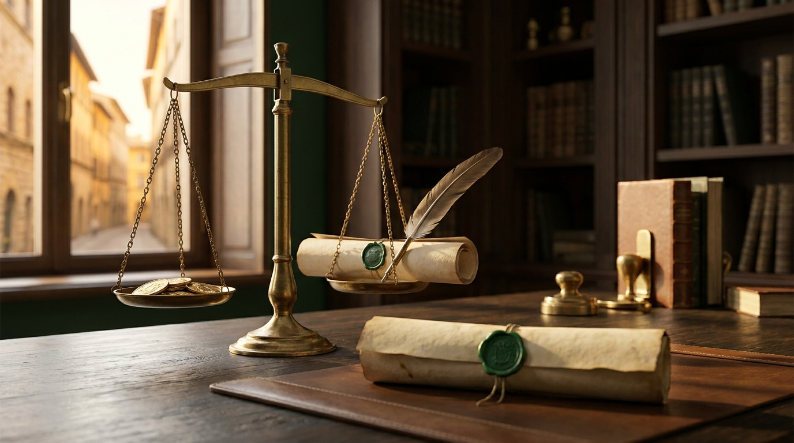

Compensi degli avvocati legati ai risultati: cosa prevede la delega forense
Un disegno di legge delega sull'ordinamento forense torna a discutere di compensi legati al risultato del caso e di nuovi meccanismi di responsabilità. Trattandosi di una delega in fase di iter, le regole concrete dipenderanno dai futuri decreti attuativi. Vediamo cosa è già diritto vigente, cosa è solo prospettato e come orientare la redazione dei mandati professionali.

Di cosa parliamo (e in che fase siamo)
Il tema dei compensi forensi legati al risultato è tornato al centro del dibattito grazie a un disegno di legge delega sull'ordinamento forense, attualmente in discussione e non ancora in vigore. La data di riferimento del testo qui considerato è il 13 giugno 2026.
Una precisazione metodologica è doverosa: si tratta di una legge delega. Significa che il Parlamento fisserebbe i principi generali, mentre le regole operative arriverebbero solo con i successivi decreti attuativi del Governo. Finché questi non saranno pubblicati, ogni valutazione di dettaglio resta provvisoria. Per questo, nel seguito, distinguiamo con cura ciò che è già diritto vigente da ciò che è soltanto prospettato.
Il quadro vigente: quota lite vietata, palmario ammesso
Per capire la portata della novità serve fissare il punto di partenza, che oggi è regolato dall'art. 13 della legge 31 dicembre 2012, n. 247 (legge professionale forense).
Il patto di quota lite puro — cioè l'accordo con cui l'avvocato pattuisce come compenso una quota del bene oggetto della lite o del risultato pratico ottenuto — è oggi vietato. Il divieto, originariamente abrogato dal cosiddetto decreto Bersani (D.L. 4/2006), è stato reintrodotto: l'art. 13, comma 4, L. 247/2012 stabilisce che sono vietati i patti con cui l'avvocato percepisce come compenso una quota del bene oggetto della prestazione o della ragione litigiosa.
È invece ammesso il cosiddetto palmario (o success fee): un compenso aggiuntivo, pattuito per iscritto, riconosciuto in caso di esito favorevole. La differenza è sostanziale. Il palmario si aggiunge a un compenso base e deve restare proporzionato; la quota lite, invece, lega l'intero corrispettivo alla sorte della causa, trasformando il difensore in una sorta di socio del cliente. È proprio questa linea di confine che ogni clausola "a risultato" deve rispettare per non sconfinare nel divieto.
Cosa prospetta la delega (e cosa resta ipotesi)
Il disegno di legge delega muove in direzione di una maggiore valorizzazione dei compensi correlati al risultato. È un'indicazione di principio: la misura, i limiti e le garanzie dipenderanno dai decreti attuativi.
Nel dibattito viene evocato anche un meccanismo di solidarietà passiva, cioè la possibilità che del compenso rispondano soggetti ulteriori rispetto al cliente diretto. Allo stato è un'ipotesi prospettata, non una norma vigente: senza il testo dei decreti attuativi non è possibile indicarne perimetro ed effetti. Va dunque letta come direzione di riforma, non come regola già applicabile.
Sullo sfondo resta l'attenzione dell'Autorità Garante della Concorrenza e del Mercato (AGCM) ai profili pro-concorrenziali della professione: un fattore di contesto che potrà influenzare il contenuto dei decreti, ma che non si traduce, di per sé, in obblighi immediati.
Implicazioni pratiche: cliente privato e grande committente
L'impatto cambia molto a seconda di chi è il cliente.
Per il cliente privato o la piccola impresa il rischio è di accordi che, sotto l'etichetta del "compenso a risultato", finiscano per spostare l'intera alea economica della lite. Qui la tutela del contraente debole e il rispetto del divieto di quota lite restano centrali.
Per il grande committente — banche, assicurazioni, imprese strutturate — il discorso è diverso: la maggiore forza negoziale rende più sostenibili schemi di compenso variabili e complessi, ed è proprio su queste relazioni che la delega prospetta limiti specifici.
Cosa fare in concreto
- Mettere sempre il mandato per iscritto, indicando con chiarezza compenso base ed eventuale componente premiale legata all'esito.
- Verificare che la clausola "a risultato" resti un palmario proporzionato e non un patto di quota lite, vietato dall'art. 13, comma 4, L. 247/2012.
- Documentare i criteri di calcolo della componente variabile, così da renderli trasparenti e contestabili.
- È opportuno attendere i decreti attuativi prima di consolidare in via definitiva clausole modellate sulla riforma, ancora in iter.
- Distinguere il trattamento riservato ai clienti privati da quello dei grandi committenti, calibrando le tutele.
---
Contributo informativo a cura di Tamburro & Partners - Avv. Giuseppe Tamburro. Non costituisce parere legale.
Ogni contratto ha il suo equilibrio.
Se vuoi una revisione delle clausole o una redazione su misura, scrivi allo studio. Ti rispondiamo entro un giorno lavorativo.